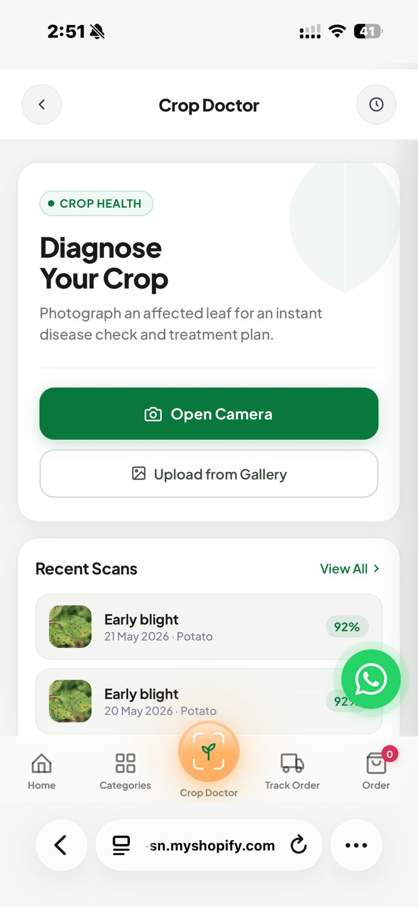
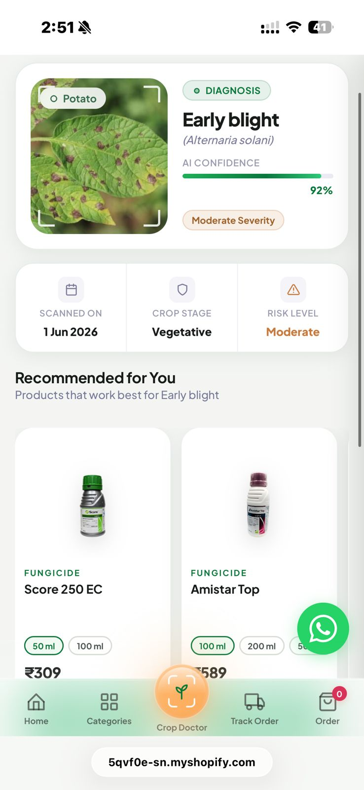
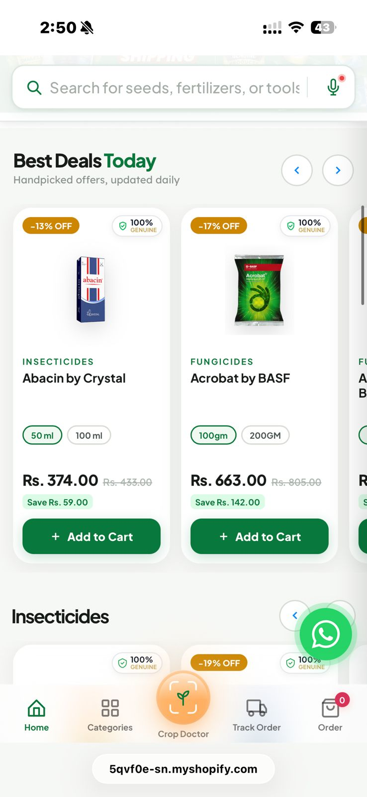
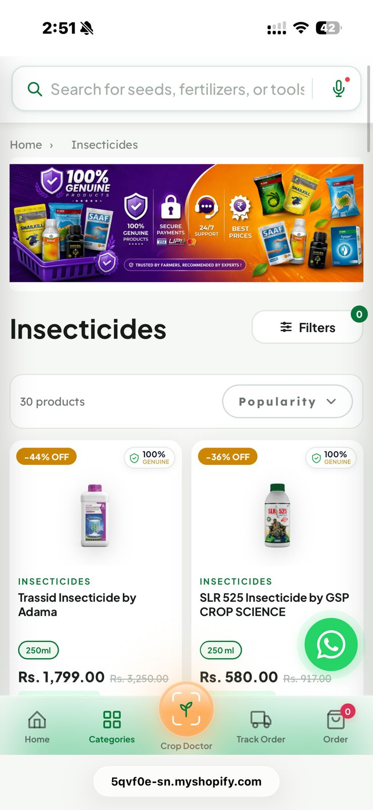
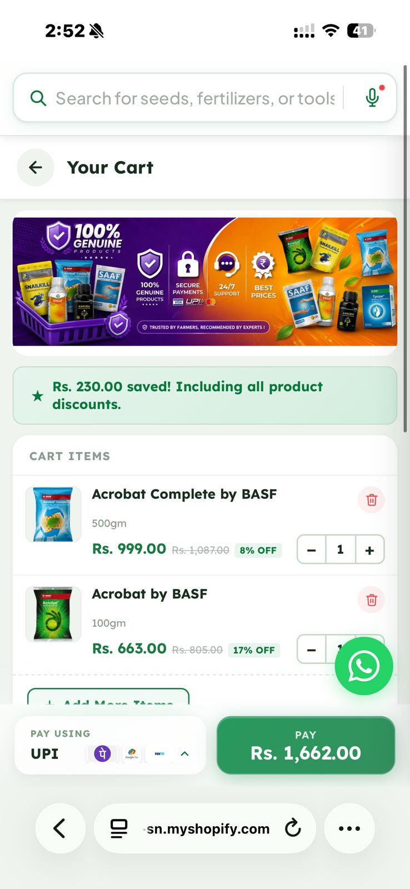
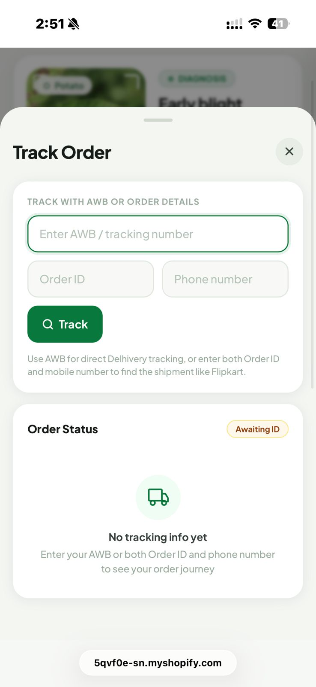
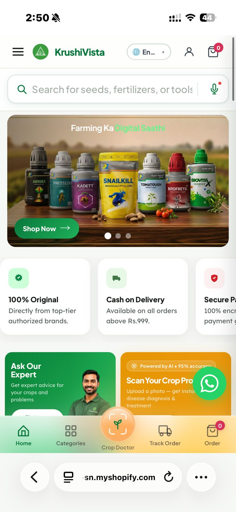
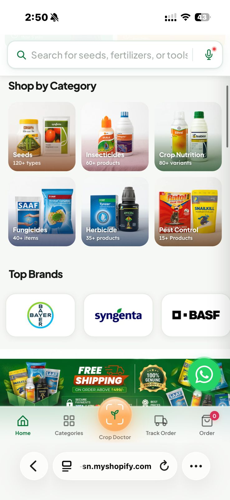
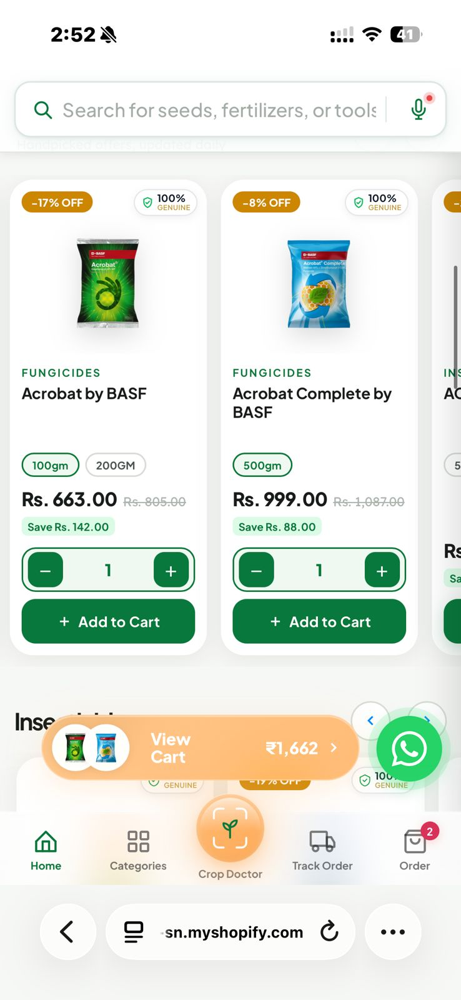
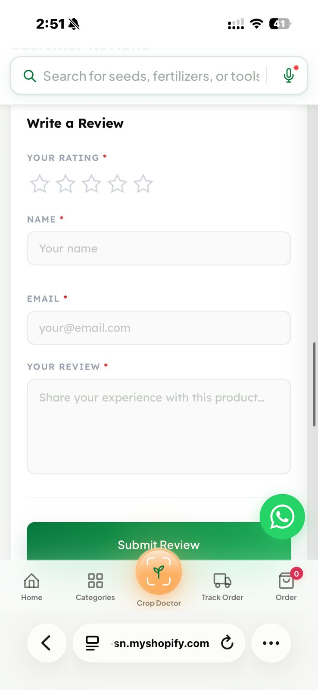

Features delivered
24+ Across the product stackVistaneo Mart Pvt. Ltd. Product Portfolio
KRUSHIVISTA
Product Management
Internship Portfolio
Hi, I'm Prajwal Pawar.
This portfolio showcases the work, decisions, and impact of my two-month Product Management internship at KrushiVista, where I contributed to building a farmer-first digital commerce platform across AI, authentication, logistics, user experience, and infrastructure.
Language access
13 Indian languagesCloud layer
9 Worker routesIntelligence
33 Disease mappingsIntegrations
5 External APIsFrom farm to phone
Product analysis · Product management · Product design
Executive Summary
01 / Overview
Removing friction from
every farmer journey.
KrushiVista brings genuine and affordable agri-inputs to farmers regardless of language, location or digital literacy. The internship work spanned the complete product system, from identifying user pain points to shaping production-ready experiences.
Mission
Bring trusted agri-inputs to every farm through a clear, accessible mobile experience.
India-firstProblem
Farmers face diagnosis gaps, search friction, low trust and uncertain delivery visibility.
4 core barriersSolution
A mobile-first product layer across AI, logistics, auth, commerce and accessibility.
24 featuresImpact
Less support dependence, faster discovery and a shorter path from problem to purchase.
1 connected system01
AI & Intelligence
Helping farmers diagnose crop disease in seconds.
The Crop Doctor closes the distance between seeing a problem in the field and knowing what to do next. No login. No waiting. A photograph becomes a treatment pathway.
33Disease-to-product mappings
< 40%Consult-expert threshold
512pxCompressed image payload
0Login steps required
Flagship Experience
AI Crop Doctor
Expert agronomists are scarce outside urban centers. The Crop Doctor places an always-available diagnostic assistant in every farmer's pocket, translating a diseased leaf image into an actionable result and product recommendations.
Misidentified crop diseases delay treatment and increase avoidable loss.
Farmers need an answer in the field, not another support workflow.
Keep the tool frictionless: camera-first, local scan history and no account gate.
Below 40% AI confidence, recommend expert consultation instead of false certainty.

User Journey
One photo. Five deliberate steps.

Product logic
Designed for action,
not novelty.
The product value is not the AI output alone. The experience turns uncertainty into a next step that the farmer can understand and act upon.
Gemini 1.5 FlashCanvas APIlocalStorageJSON
"The shortest possible route from affected leaf to appropriate treatment."
Discovery System
Predictive search with a zero-result safety net.
Farmers often learn product and chemical names aurally. Search therefore needs to tolerate partial spellings, phonetic approximations and composition-led queries.
02
Commerce & Conversion
Making every product interaction feel trustworthy.
Farmers need more than a catalog. They need evidence of authenticity, confidence at the moment of purchase, and a checkout flow that never asks them to guess the next step.
krushivista.com · collection experience


Reusable Product Card System
Ten layers of confidence before add-to-cart.
Every card auto-resolves genuine-product badges, category styling, discounts, vendor trust, variants, pricing, savings and add-to-cart feedback. One reusable Liquid component powers collections, recommendations and search results.
10 card layers
18ms haptic pulse
500ms badge delay
01
Two-touch add to cart
First tap registers intent. Second tap confirms and submits. On mobile, this reduces accidental adds caused by scroll-grazing.
02
Multi-sensory feedback
A crisp 18ms vibration, button glow and delayed cart-badge bounce answer the question: “did that actually add?”
03
Locked-step checkout
Phone verification unlocks address collection. Address completion unlocks payment. The flow stays linear and legible.
Cart Experience
A clear, confident
checkout handoff.
The cart experience groups item management, recommendations and UPI payment into a simple mobile composition. It keeps savings visible while preserving a stable checkout action at the bottom of the screen.
Genuine productsVisible savingsPersistent pay action

03
Authentication & Accounts
Designing account access around the habits farmers already have.
Email and password authentication introduces avoidable friction. Phone OTP mirrors banking, UPI and government-portal behaviors that users already understand.
Phone entry
Validate a 10-digit mobile number and request a 6-digit OTP through MSG91.
OTP verification
Six auto-advance boxes reduce entry ambiguity and mirror familiar banking patterns.
Name capture
New users add first and last name before the Shopify customer profile is created.
Session continuity
A 30-day token respects the seasonal cadence of agricultural purchases.
Security model
Convenient without becoming casual.
- OTP expiry
- 10 minutes
- Resend cooldown
- 30 seconds
- Verification limit
- 3 attempts
- Session TTL
- 30 days
- Private credentials
- Worker secrets only
Account dashboard
Orders, tracking and returns
inside one familiar surface.
Order cardsLive timeline7-day returns401 session guard
04
Logistics, Search & Mobile UX
Making the platform explain itself at every step.
A farmer-first platform does not hide state. It makes status visible, uses language that feels familiar and offers alternatives when typing or navigating gets difficult.

Track Order
Reduce “where is my order?” anxiety.
A dedicated tracking surface converts raw Delhivery status codes into four understandable stages, while a red exception pathway makes return-to-origin states explicit.
ReceivedDispatchedIn transitDelivered
Delhivery APICloudflare WorkerPhone normalization
01
Voice search
SpeechRecognition adapts to the selected language, removing the typing barrier for complex product names.
02
13 languages
Regional language support is treated as market access infrastructure, not an optional interface preference.
03
Sticky navigation
Search, categories, account and cart remain within reach across every shopping depth.
04
Contextual motion
An animated truck loading state turns a network delay into an understandable delivery metaphor.
Mobile product language
Consistent where it matters.
Expressive where it helps.
The visual system uses large touch targets, familiar icons, authentic product imagery, stable bottom navigation and restrained motion.




05
Infrastructure & APIs
A secure edge layer behind a simple interface.
The platform keeps complexity behind the scenes. Sensitive credentials never reach the browser, while Cloudflare Workers coordinate identity, logistics, commerce and communication.
Public surfaceBrowserMobile-first experience
Edge layerCloudflare Worker9 routes · KV · secret management
Generate & dispatch
Store a short-lived OTP record in KV and send it securely through MSG91.
Validate & issue
Verify attempt limits, find or create the customer and issue the session.
Surface account value
Fetch order history and detailed purchase context through authenticated requests.
Expose delivery clarity
Proxy logistics events and map raw courier codes to human-readable stages.
06
Product Management Showcase
From observation to a shipped product decision.
The work was not a list of interface enhancements. Each feature began with a farmer problem, became a scoped product decision and shipped with a measurable purpose.
Regional access
13-language support opens the product to farmers excluded by English-only commerce.
Market accessOrder visibility
Self-service tracking addresses the highest-volume support question first.
Support deflectionAI confidence
Below 40% confidence, the product hedges and nudges expert consultation.
Responsible AIOTP security
10-minute expiry, 30-second cooldown and three-attempt maximum.
Intentional defaultsHaptic timing
An 18ms pulse confirms add-to-cart without borrowing the language of error states.
Feedback designCross-sell cap
Six title-deduplicated recommendations preserve relevance and reduce overload.
Focused choiceProduct Development Lifecycle
Product Analysis
Find the barrier behind the behavior.
- Order-status support load
- Password friction
- Phonetic search behavior
- Brand authenticity concerns
- Agronomist scarcity
Product Management
Turn insight into implementable requirements.
- OTP security parameters
- Locked checkout progression
- Return-window policy
- Haptic feedback timing
- Confidence thresholds
Product Design
Make the right action feel obvious.
- Severity color system
- Two-touch add-to-cart
- Voice-led discovery
- Contextual loading state
- Mobile progressive disclosure
Complete Delivery Dashboard
24 shipped features
A connected product system,
not a collection of pages.
Each card below represents a shipped capability and the user friction it was designed to reduce.
KrushiVista · Key Outcomes
A simpler digital path
from problem to solution.
“Every feature was designed to remove friction between a farmer's problem and its solution.”